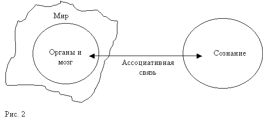

Одновременное исполнение процессов, сохранённых в памяти в разное время, обеспечивает прохождение алгоритмом теста на осознавание себя.
Алгоритм самообучения
Доказательством понимания природы и главных принципов работы сознания могло бы служить возникновение сознания у специально созданного искусственного существа.
Требуется построить ощущающую машину
Мы считаем себя обладающими сознанием, например, потому, что мы способны контролировать и обдумывать свои действия. Более простая форма сознания заключается в способности осознавать, то есть ощущать свои действия и их последствия. Ещё более простой формой сознания является способность хотя бы осознавать свои ощущения, что мы коротко обозначаем словом "ощущать".
Поэтому доказательством понимания основ сознания было бы построение ощущающей машины. Эту машину можно будет назвать сознательным существом, если она будет осознавать не только ощущения, но и свои действия, и, тем более, если она сможет обдумывать и планировать свои действия.
Ощущение - это простейшая форма сознания. По мере накопления опыта ощущения детализируются, формируются навыки поведения, развивается осознание взаимосвязи ощущений и действий.
Явными признаками сознания являются интеллектуальные способности, в частности, творчество и способность к обучению. Связь обучения с ощущением прослеживается в тесте на самообучение . Из способности к самообучению следует наличие внутреннего стремления к определённому состоянию - самоощущению.
Желаемое внутреннее состояние можно считать заданной от природы безусловной потребностью . Технически, можно ввести целевую функцию W, пропорциональную потребности и зависящую только от состояния S сенсоров машины. Минимальное значение этой функции соответствует минимальной потребности. Удовлетворение потребности, то есть минимум целевой функции W может быть достигнут в результате полезного или выгодного поведения .
Если поведение не задано программными и конструктивными средствами, и вместе с тем у существа есть встроенные средства запоминания выгодного поведения, то происходит самообучение - случайное обнаружение и постепенная деталировка выгодного поведения. В процессе самообучения у существа развиваются ощущения качеств внешнего мира, зависящих от поведения и влияющих на общее состояние этого существа. Ощущение – это субъективное измерение своего состояния, необходимое при поиске желательного состояния. Существо ориентируется на свои ощущения, когда нужно выбрать то или другое поведение. Наблюдаемая извне рационализация поведения субъективно состоит в улучшении самоощущения, а объективно – в уменьшении (удовлетворении) потребности.
Творчество и самообучение - это способности к самостоятельному поиску полезного поведения , приводящего к удовлетворению врождённых, безусловных потребностей.
Обучение (с учителем) – это создание специальных условий, при которых самообучение приводит к выработке поведения, полезного не только ученику, но и учителю.
Самообучение ещё называется способностью к универсальному научению, которое состоит в том, что целевая функция W убывает при произвольно заданном (например, случайном) начальном поведении и при любых законах мира – машина выводит полезное поведение из любого изначально заданного. Универсальное обучение или самообучение - это обучение без внешней мотивации того, что и как надо учить.
Достаточно легко проверяемое у машины отсутствие встроенных алгоритмов, приспособленных к определённому внешнему миру, является первой ступенью доказательства наличия субъективных, а не автоматических (алгоритмических, механических, конструктивно обусловленных) стремлений.
О способностях машины мы будем судить по её поведению , так как невозможно объективно проверить наличие ощущений у другого субъекта. Доказательство возникновения сознания должно исходить из особенностей конструкции и из заключения скептически настроенного эксперта. Мы можем предлагать тесты и способы доказательства, но только независимый эксперт проверяет, что наша машина обладает сознанием. Он сам должен убедиться в том, что наша машина обладает творчеством, испытывает эмоции по поводу своих действий и нашего отношения к ней.
Направление поиска
Сознание человека реализовано победившими в эволюционной борьбе биологическими средствами. При другом стечении обстоятельств вместо нервной системы мы могли бы иметь несколько отличающуюся или совсем другую систему информационного обмена между органами, а вместо мозга - другой орган для централизованного управления организмом.
Возможность функционального объяснения механизма научения предполагает, что одинаковые функции могут исполняться различными техническими средствами. Эта идея позволяет не ограничивать себя подражанием природе. В частности, не обязательно размещать в центре искусственного разума мозг из нейронных сетей, имитирующий живой мозг, если окажется, что без этого можно обойтись. В конце концов, природа создавала нас путём случайных попыток, и могла найти не самое оптимальное решение.
Конечно, и я придумал не самый оптимальный алгоритм и требования к организации работы органов, обеспечивающих работу субъективного сознания. Это - один из возможных вариантов самообучающейся машины.
Я попробую объяснить устройство ощущающего существа путём постепенной детализации задачи о построении самообучающейся машины. В какой-то момент множество деталей станет отвлекать от основной цели работы. Тогда нужно будет пропустить этап детализации, и перейти к обсуждению алгоритма и его реализации.
Вместо постепенного введения существенных терминов и понятий, я буду использовать их с самого начала, и буду уточнять их значение только в силу необходимости их конкретного применения. Вы можете заметить противоречия в трактовке некоторых понятий. Считайте, что их определения сформулированы в первом приближении и ещё требуют согласования.
К примеру, термины прогноз или поведение, используются как в обычном широком, так и в алгоритмическом смысле, и нужно выполнить плавный переход от одного понимания к другому. В алгоритме нет особой разницы между сенсорами и эффекторами. Поэтому прогнозирование относится как к поведению, так и к восприятию. Попробуйте объединить традиционно активное поведение и пассивное ощущение , и у вас сначала тоже возникнут противоречия.
Почему я предпочитаю "сознание" традиционному понятию "искусственный интеллект"? Зачем называть кибернетическую систему существом? Не выдаю ли я желаемое за действительное? Как эти естественные вопросы, так и ответы ещё потребуют разъяснений.
Значение термина "искусственный интеллект" зависит от контекста. Меня интересует та часть задачи, которая рассматривает возможность создания искусственного сознания, создания чувствующей и осознающей свои ощущения машины. О том, как сознание и интеллект развивается из ощущений рассказано в статье " Механизмы сознания " и на других страницах сайта.
Я не могу обойтись без таких терминов, как сознание и ощущение ещё и потому, что разрабатываемый алгоритм не предназначен для решения определённой технической задачи ИИ, вроде идентификации почерка, распознавания текста, или "смыслового" поиска в базе данных. Алгоритм по существу не конкретен и вообще не задаёт никакой предписанной реакции на входные данные.
Смысл подхода, совмещающего такие противоречивые понятия, как абстрактность и алгоритм, не удаётся объяснить чисто технически, без ссылок на философские и психологические аргументы.
В частности, машину, имеющую субъективные ощущения, естественно называть существом. К этому слову нужно относиться как к основному требованию поставленной задачи. Что получится в результате – машина или существо – это тема отдельного исследования, которое само может изменить наши понятия о разуме в применении к машине.
Объективный внешний мир
Об уровне интеллекта и о возможных ощущениях машины можно судить только наблюдая и изучив её поведение , то есть взаимодействие с внешним миром, в том числе с нами.
Обычное понятие поведения подразумевает заинтересованность в результате, а не просто взаимодействие. Строго говоря, заинтересованность является свойством субъекта и скрыта от стороннего наблюдателя. Она может проявиться через характерные признаки поведения. Эти признаки зависят от характера целевой функции, физических особенностей организма, особенностей алгоритма универсального обучения, (и от нашей способности к их интерпретации :).
Для методического упрощения задачи можно дать машине искусственный внешний мир. Однако предопределённые рациональные свойства искусственного мира можно ошибочно принять за интеллектуальное достижение машины, так как иногда трудно отделить поведение мира от поведения существа в их взаимодействии. Поэтому в перспективе требуются испытания в реальном мире, окружающем и нас и наше искусственное существо.
Свойства физического мира не зависят от меня, что особенно важно для беспристрастного испытания искусственного интеллекта. Объективность внешнего мира означает, что его свойства не зависят от сознания и от внутренней модели мира.
Сознание и тело
Сознание не является физическим объектом и не имеет геометрической связи с физическим миром. Можно считать, что объективный мир является внешним по отношению к сознанию в том смысле, что сознание является частью всего мира (этот термин объясняется в статье " Происхождение пространства "). Законы внешнего мира не зависят от сознания, в то время как сознание зависит от мира и отражает его. Однако локальные свойства мира зависят от материализованной активности (сознательного) существа или машины.
Физическое тело существа, обладающего сознанием, включая его мозг и прочие органы, является геометрически вложенным в мир. Можно говорить о внешнем или окружающем мире, как о части мира вне тела.
Тело не обязательно имеет физическую форму, например, оно может быть информационным на физическом или на информационном же носителе. Тело такого эфемерного существа остаётся частью объективного мира и служит носителем органов, мозга и других систем, обеспечивающих работу сознания.
В общем, понятие тела тоже условно, и используется здесь в качестве объединяющего названия для органов и системы управления, которые не обязаны геометрически находиться в пределах легко узнаваемого физического организма .
Если существо имеет физическое тело, то у него могут быть внешние органы, взаимодействующие с внешним миром, и внутренние органы, определяющие (или влияющие на) внутренние физические параметры тела. Функционально, внутренние органы не отличаются от геометрически внешних органов и взаимодействуют с миром и друг с другом, физическими средствами.
Органы и мозг
Любое устройство, преобразующее воздействие в код, или код в воздействие, может служить органом-сенсором или исполнительным органом машины. Для обеспечения универсального обучения органы должны обладать особыми свойствами, которые имеются не у любого преобразователя. Оптимальная конструкция и особые функции датчиков-преобразователей, превращающие их в эффективные органы, следуют из разграничения доступа к объектам и данным между мозгом, органами и внешним миром, которое требуется для обеспечения универсальности мозга.
Связь органов с внешним миром может быть физической или информационной в зависимости от природы этого мира. Связь материальных органов, посредством нервной системы, с материальным мозгом уже можно считать и физической и информационной, что соответствует современным представлениям о роли мозга в организме.
Связь мозга с сознанием является не информационной, а абстрактно-ассоциативной . Субъект наблюдает внешний мир через калейдоскоп ассоциативной игры мозга с хранящимся в памяти прежним опытом взаимодействия мозга с органами . Субъективное наблюдение воспринимается субъектом, например человеком, а не его мозгом в виде форм сознания – образов, идей, ощущений. Для мозга идеальные ощущения - недоступная абстракция .

Сознание взаимодействует с миром при помощи органов, используя эту же абстрактно-ассоциативную связь . Физически взаимодействие происходит между органами и внешней по отношению к ним частью мира, в том числе и друг с другом, по общим законам взаимодействия частей мира. Сознание наблюдает это взаимодействие, интерпретируя его в своих идеальных категориях (ощущения, эмоции, идеи), и воспринимая себя субъектом, управляющим своим телом. О том, в каком смысле идеальное сознание включено в цепь физических взаимодействий, говорится в заметке " Детерминизм и свобода воли ".
Универсальный мозг
Связь тело-сознание, в отличие от физической или информационной связи, не поддаётся формализации из-за своей абстрактности. Когда я пишу этот текст, то работаю с понятиями и символами. В это время мозг принимает и выдаёт нервные сигналы, а руки преобразуют нервные импульсы в движения. Понятия, нервные сигналы и движения связаны друг с другом только благодаря тому, что они направлены на взаимодействие с одним и тем же внешним миром. Они отражают один и тот же объективный мир, но имеют несводимую друг к другу внутреннюю природу. Используемая в работе универсального мозга формализация не может ссылаться на конкретные, представимые средствами сознания образы, например, понятия. И не может ссылаться на представимые средствами объективного мира внешние объекты, например, на изображения символов.
"Неформализуемость основ формализма" является другим выражением несводимости материального и идеального, и имеет неконструктивный характер, то есть не препятствует построению универсального мозга и ощущающей машины и возникновению ощущающих существ в природе.
Конструктивным следствием неформализуемости сознания является то, что его не нужно "формализовать" для обеспечения субъективных ощущений у машины. В частности, не нужно имитировать структуру внешнего мира в памяти. Не требуется хранить в памяти слова, планы лабиринта, распознаваемые изображения - достаточно хранить сигналы, которыми обменивались мозг и органы.
В моём алгоритме, абстрактность мозга по отношению к текущему состоянию машины состоит в том, что он ассоциативно оперирует только прошлым опытом. В отличие от универсального мозга сознание воспринимает конкретное ощущаемое состояние (в контексте всего прошлого опыта) в форме образов взаимодействия с внешним миром. Текущее состояние может инициировать образы как прошлого (воспоминание), так и предполагаемого будущего (прогноз).
Специализированные органы
Органы, приспособленные к выполнению определённых физических преобразований, являются источниками ощущений (качеств внешнего мира) для сознания.
Органы конкретны. Их функция преобразования воздействие-код не обязательно зависит от предыстории. Сознание менее конкретно. Оно интерпретирует своё текущее состояние, используя прошлый опыт. Мозг является абстрактным в том смысле, что он вообще не использует текущее состояние органов.
Нервная система, память и мозг не имеют прямой связи ни с внешним миром, ни с сознанием. Для них физический мир так же эфемерен, как и сознание. Формализованная связь сознания с миром в форме мышления возникает на поздних этапах развития сознания.
Функции органов
Активность машины проявляется в действиях, поведении, зависящем от её состояния и от локальных свойств мира. Поведение осуществляется при помощи органов действия, исполнительных механизмов, которые мы назовём "эффекторами". Воспринимающие (пассивные) органы - это "сенсоры".
Поскольку универсальный мозг не может хранить конкретные данные, то функция запоминания передаётся интерфейсу между мозгом и органами или самим органам. В последнем случае органы самообучающейся машины являются датчиками-преобразователями, способными накапливать в памяти последовательность кодов, выполнять некоторые функции по выбору данных из памяти, в частности, сравнивать текущие и прежние значения кодов. Такой орган, сам по себе, без обращения к мозгу, обладает когнитивными свойствами, так как имеет средства сравнения прежних и текущих данных. Орган даже может иметь свой информационный процессор - мозг. Использование централизованного мозга – это только один из способов организации кооперативной работы органов.
Сенсоры измеряют доступные им свойства мира S(t) и преобразуют результат измерения в функцию-код s(t). S(t) - это не свойство мира в буквальном смысле, а то, что воспринимает сенсор – состояние или показание сенсора.
Эффекторы преобразуют поток команд e(t) в действия по отношению к миру E(t). E(t) также является свойством или состоянием эффектора.
Строго говоря, E(t) – это не само физическое действие, а то, что должен выполнить эффектор, если это позволят законы внешнего мира и текущее состояние эффектора. При успешном выполнении функцию E(t) можно трактовать, как само действие. При одном и том же состоянии эффектора E(t) физические действия могут различаться в зависимости от состояния мира.
Органы взаимодействуют друг с другом как через внешние, реальные каналы связи E(t) -- > S(t) (через внешний мир), так и через внутренние, информационные каналы s(t) -- > e(t) (через систему управления).
Поведение машины – это действия E(t) в зависимости от её состояния S(t). Обозначим поведение как преобразование S(t) -- > E(t). Машине недоступны никакие другие сведения о мире, кроме тех, которые представимы через S(t). Действия E(t) тоже несут информацию о внешнем мире, хотя бы потому, что определённое состояние мира требует определённых действий.
Воспринимаемое поведение мира E(t) -- > S(t) определяется законами мира. Мы не конструируем мир и не интересуемся причинами определённого поведения мира. Может быть, мир тоже содержит свою "систему управления".
При таком определении объект может иметь поведение по отношению к миру , а мир - по отношению к опыту (внутреннему миру) объекта . Взаимодействие происходит между конкретными объектами, а поведение – между одним объектом и всеми прочими объектами в мире, которые рассматриваются как внешний мир . При таком толковании термин "поведение", пока отличается от термина "заинтересованное поведение".
Заинтересованное (умышленное, осознаваемое) поведение возникает в силу стремления машины оптимизировать заданную целевую функцию состояния W в условиях взаимодействия с реальным миром.
Целевая функция W может формироваться специальными сенсорами Sw, анализирующими общее состояние системы. В общем случае можно вырабатывать сигнал W не путём прямого измерения, а путём расчёта по данным других датчиков W=W(S,E). При этом значения W(t) полностью определяются показаниями (кодами, сигналами) датчиков s(t) и e(t).
Система управления
Система управления самообучающейся машины состоит из абстрактной части, которая оперирует с ассоциациями по поводу s(t) и e(t), и интерфейса с органами, который работает с конкретными кодами s(t) и e(t).
Если бы система управления была основана "на правилах", и выполняла только заранее определённые операции с функциями s(t) и e(t), то она не имела бы возможности универсального обучения. Правила можно изменять по мере накопления опыта. Но проще построить универсальный мозг - ядро системы управления, вообще не работающее с функциями s(t), e(t).
Разделение системы управления на систему взаимодействия с органами и универсальный мозг приводит к возможности замены органов или замены содержания их памяти, то есть кодов s(t) и e(t), без замены алгоритма функционирования универсального мозга машины. В том числе, возможна частичная замена или модернизация органов без перерыва сознания.
Иерархически каждый орган может обладать своими органами и мозгом. При этом конструкция существа представляет собой симбиоз взаимодействующих органов, для которых также заданы внутренние правила обмена информацией. Однако "правила" физического взаимодействия определяются законами мира и не могут быть заданы произвольно. При таком подходе каждый живой нейрон является "органом", совмещающим функции сенсора и эффектора.
Взаимодействие блоков
Сенсоры выполняют конкретное преобразование S(t) -- > s(t), которое можно интерпретировать как преобразование воздействия со стороны мира в код. Эффекторы выполняют конкретное преобразование e(t) -- > E(t), то есть преобразуют код команды в воздействие на мир. Преобразование s(t) -- > e(t) ( поведение системы управления) выполняет система управления.
Формат данных и сами величины s(t) и e(t) зависят от устройства датчиков. Эти данные остаются в их памяти, но не зависят, не контролируется и никак не используется мозгом. У нашей машины мозг и память не объединены в один блок, подобный биологическому мозгу. Абстрактная часть системы управления - мозг не обрабатывает сигнал s(t) и не вырабатывает сигнал e(t).
Множество значений s(t) и e(t) для всех датчиков в определённый момент времени t называется событием Ev(t). Событие – это внутреннее представление данных, а не объективное явление. Если память принадлежит датчикам, то параметр t в Ev(t) имеет смысл момента времени в прошлом, а не текущего времени, как в функциях состояния сенсоров S(t) и эффекторов E(t). Множество данных s(t) и e(t) – это фиксированное, сохранённое в памяти прошлое . Поэтому полезно ввести два обозначения для времени: t – текущее время, tp – ссылка на момент времени в прошлом.
Непрерывная последовательность событий, все из которых были похожи на текущее событие в течение некоторого времени до данного момента t, и которая завершается событием, похожим на текущее событие Ev(t), называется узнаваемым процессом. Процесс – это событие вместе со своей историей.
Датчики сообщают мозгу свои функции узнавания Ct(tp) (где t – текущее время, tp – все моменты прошлого). Функция узнавания показывает, в какие из прошедших моментов времени события Ev(tp) были похожи на текущее событие Ev(t). Функции Ct(tp) не содержат информации о том, что и в каком виде было зафиксировано датчиком.
В ответ мозг сообщает датчикам моменты прошлого tps, когда узнавание было удачным для системы в целом. Удачное узнавание - это такой похожий момент tp в прошлом, после которого была снижена потребность W.
Похожесть или узнавание определяется при сравнении событий или процессов, а удачность узнавания – при сравнении величин W, зарегистрированных после узнавания.
На рисунке: Текущее состояние s(t) похоже на некоторые сохранённые
в памяти состояния. После моментов tps1 и tps2 было замечено уменьшение
потребности W.
Датчики-преобразователи машины, способной к универсальному обучению, можно по праву назвать органами, так как они могут обучиться чему угодно в пределах своих физических способностей, что было бы невозможно при заранее заданном алгоритме управления датчиками.
Органы сами хранят свой опыт. Поэтому после обучения шаблоны правильного поведения остаются в памяти органа, что разгружает мозг от "квалифицированного" управления. Другими словами, по мере обучения мозг не умнеет и не накапливает знания.
Разумность поведения и способности к обучению нашего существа зависят от эффективности органов и от того, как организовано внутреннее информационное взаимодействия между органами. И хотя органы могут иметь непосредственную зависимость друг от друга, в том смысле, что сигнал s i (t) органа i является командой e j (t) = f [s i (t)] для органа j, мы не будем рассматривать такие чисто безусловные рефлексы .
Система управления вырабатывает команды e(t), основываясь на данных s(t) и на прежнем опыте машины. Такая система управления взаимодействует с органами и не взаимодействует с внешним миром. Возможный датчик состояния W самой системы управления или мозга, вырабатывающий соответствующий сигнал s(t), функционально является органом, а не частью системы управления.
Потоки данных s(t) и e(t) скрыты от абстрактной части системы управления - мозга. Сенсоры и эффекторы образуют собой интерфейс между миром и системой управления. А между мозгом и датчиками должен быть интерфейс преобразующий "прошлое" tp в "настоящее" t.
Хотя я отделяю систему управления от других органов, но её можно считать особым органом, регулирующим общее состояние системы. Также и мир можно считать органом – генератором или источником возможных состояний системы, измеряемых сенсорами S(t).
Сенсор воспринимает сигнал S(t) и вырабатывает сигнал s(t). Он преобразует своё состояние S(t) в код s(t).
Система управления (СУ) воспринимает сигнал s(t) и вырабатывает сигнал e(t). Здесь уже видно, что s(t) – это не совсем "текущее" состояние СУ, так как СУ использует всё хранимое в памяти прошлое для выработки сигнала e(t).
Точно так же есть зависимость от прошлого у состояний мира, сенсоров и эффекторов.
Эффектор воспринимает сигнал e(t) и вырабатывает сигнал E(t). Текущим состоянием E(t) можно считать физическое состояние эффектора, а e(t) является его информационным состоянием.
Мир воспринимает сигнал E(t) и вырабатывает сигнал S(t). Мир преобразует задаваемое машиной состояние E(t) в доступный восприятию машины физический код S(t). Цикл преобразований замыкается, и мы получаем круговую диаграмму - другое представление схемы 3.
Заметим, что все части этой схемы принадлежат миру, и она не требует никакого "сознания". Функционирование мозга тоже не нуждается в наличии сознания. Круговая схема показывает, что в схеме машины каналы сенсора и эффектора размещены симметрично относительно друг друга, и даже дублируют друг друга. Из рис.4 и рис.5 видно также, что мир и мозг расположены симметрично по отношению к блоку из тела и системы управления.
Обведённую пунктирной рамочкой систему управления по аналогии с биологическим мозгом можно было бы тоже назвать мозгом , но мы сохраним это название для центра абстрактного управления , который выполняет только часть функций настоящего мозга. Я не объединяю CPU (центральный процессор) и память в единое устройство "модель живого мозга", и даже не стану использовать далее слова "система управления", так как считаю важным, чтобы "память" принадлежала органам и была не видна из центра абстрактного управления.
На рисунке 6 уточнено, что поток данных между мозгом и интерфейсом эффектора должен быть двунаправленным, так как мозг может получать ассоциативную информацию Ct(tp) не только о состоянии сенсоров, но и о состоянии эффекторов.
Мир, сенсоры и эффекторы выполняют прямое преобразование "по правилам", а мозг решает косвенную задачу оптимизации совокупности физических состояний датчиков S(t) и E(t), не используя данных s(t) и e(t).
Для мозга сенсор практически не отличим от эффектора. Если бы мозг подавал команду tps также и на сенсор, то в этой структурной схеме сенсор и эффектор можно объединить в одно двунаправленное устройство "датчик", интерфейс которого
- получает от мозга команду tps, извлекает из памяти данные d(tps) (то есть, s(tps) или e(tps)), и подаёт на датчик команду d(t)=d(tps)
- получает от датчика и направляет в память команду d(t), то есть просто фиксирует состояние датчика в момент t,
- извлекает из памяти все d(tp), формирует и передаёт мозгу данные об узнавании Ct(tp).
Объединяя сенсор и эффектор в единое устройство "датчик", мы включаем в него как физические свойства взаимодействия с миром, так и функцию интерфейса с мозгом и память. Это и есть "орган" содержащий свой интерфейс для взаимодействия с мозгом.
На рисунке:
Орган содержит физический интерфейс,
память и информационный интерфейс.
Возможны разные реализации универсальной адаптирующейся машины, которая оптимизирует заданную целевую функцию. Подробности устройства мозга, памяти, да и самой целевой функции не имеют принципиального значения. Для развития сознания достаточно, чтобы у машины имелись мотивы , а не алгоритмы поведения. Сознание развивается из ощущений, а не из физической реализации.
Проследим путь данных
В физическом мире происходит взаимодействие органов с миром, а в сознании происходит ассоциативное возбуждение воспоминаний о прежних ощущениях. Оба этих мира находятся вне информационной системы управления нашей машиной.
Физические данные превращаются в информацию в датчике-преобразователе (сенсоре и эффекторе).
В момент t датчик вырабатывает код d(t), соответствующий его текущему состоянию D(t).
Код d(t) подаётся на вход памяти датчика. В память заносятся коды состояния датчиков d(t), а также численное значение целевой функции W(t), которое вычисляется на основе текущих состояний датчиков.
На основе данных d(tp) информационный интерфейс вырабатывает функцию Ct(tp), имеющую смысл сравнения текущего процесса со всеми данными, ранее попавшими в память в моменты tp<t.
Функция Ct(tp) поступает в мозг, который сопоставляет все такие функции от всех органов, и находит, какие из моментов прошлого, похожи на текущий момент одновременно у многих органов. В эти моменты некое суммарное значение Ct(tp) максимально. Из всех похожих моментов мозг выбирает наиболее успешные моменты tps, которые в прошлом привели к последующему лучшему значению целевой функции W. Данные из канала W доступны мозгу в виде сравнимых чисел.
Моменты tps могут различаться для разных групп датчиков. Благодаря этому мозг способен подобрать такой лучший момент в прошлом, который синтезирован из различных фрагментов истории, и который лучше соответствует текущей ситуации, чем любая из ситуаций, хранимых в памяти.
Получив от мозга значение момента времени tps, память (датчика) выдаёт на датчик код его состояния d(t)=d(tps) в этот момент.
Именно этот синтезированный мозгом момент прошлого (не всегда совпадающий с текущим моментом и с реальным прошлым) может стать текущим осознаваемым ощущением, так как он строго ассоциативно привязан к осознанным ощущениям или осмысленным понятиям, то есть, он имеет смысл. Практически, позитивный опыт существования в физическом мире приводит к тому, что почти все текущие ощущения уже были испытаны ранее и способны быть осознаваемыми.
Сенсор игнорирует эту команду, а эффектор выполняет соответствующее действие по отношению к миру.
Эффекторы можно устроить так, что тот же самый, неизменённый код команды d(t) является подтверждением её успешного выполнения. Выполненная команда и есть код состояния эффектора. Если команда была некорректной или что-то другое помешало её исполнению, то эффектор может оказаться в другом состоянии. В этом случае входная и выходная команды различаются.
Новый цикл обработки данных начинается с поступления состояний датчиков в память. Буквальное последовательное исполнение этого цикла не обязательно, так как, благодаря привязке к общему времени все компоненты машины могут работать асинхронно.
Структура данных
Описанные выше системы самообучающейся машины, в конце концов, обрабатывают данные . Математическое описание этой обработки не требует разделения машины на органы, разграничения их функций, не требует упоминания того, что данные хранятся в памяти и других подобных ссылок на устройство машины. Даже представления о времени и о работе в реальном времени относятся не к алгоритму, а к его применению.
Однако я буду использовать привязку обозначений и операций к машине, чтобы уменьшить формальность довольно непрозрачного и усложнённого (на первый взгляд) алгоритма.
Данные
Итак, имеются данные di(t) , где i – номер датчика – источника данных , t – время. Параметр время используется для синхронизации выбора данных из памяти независимо работающих датчиков. Синхронность хранения данных можно обеспечить тем, что метка времени заносится в память датчика в момент поступления данных, или путём одновременного считывания данных всех датчиков в заданные моменты времени. Этот вопрос относится к реализации алгоритма.
В текущий момент времени t=tc величина di(t) принимает значение текущего состояния датчика i. Для t >tc данные могут задаваться путём ссылок на моменты времени в прошлом t<tc, например
d(t2) ← d(t1), t2>tc, t1<tc
Такое упреждающее задание данных имеет смысл прогноза : в момент t2 ожидается поступление таких же данных, как данные, полученные в момент t1.
При t<tc данные не изменяются. Они просто хранятся в памяти .
Целевая функция
Целевую функцию удовольствия P(t) может вырабатывать специальный датчик. В качестве алгоритмической реализации такого датчика можно выполнять вычисление функции P(t) в момент поступления данных t=tc. Текущее удовольствие P(tc) - это не функция над содержимым памяти, а функция текущего состояния датчиков.
P (tс) = f [ d1(tс), d2(tс), … ]
Функция удовольствия P противоположна функции потребности W. Мозг нашей машины должен обеспечить максимальное среднее значение P(t). Среднюю величину P(t) в интервале времени от tc до tc+T назовём предстоящим успехом S(t).
S(t) = 1/T ∫ P(t)dt
Узнавание
Данные различных датчиков несопоставимы, так как они могут обслуживать органы, имеющие разную физическую природу. Возможно только сравнение состояний одного датчика, зарегистрированных в различные моменты времени. Величина функции сравнения Ci(t1,t2) пропорциональна похожести данных, сохранённых в памяти датчика i в моменты t1 и t2.
0 ≤ Ci (t1, t2) ≤ 1
Если di(t1) = di(t2), то Ci (t1, t2) = 1. Данные в моменты t1 и t2 считаются похожими, если Ci (t1, t2) ≥ C0, где C0: 0 < C0 ≤ 1 - порог узнавания . К примеру, C0=0.5. В момент t1 данные первого датчика d1(t1) похожи на текущие данные d1(tc), если C1(t1, tc) ≥ C0.
Процесс
Процессом t1 называется участок данных di(t), включающий точку t1. Для обозначения процесса используется ссылка на момент времени t1. К этому моменту процесс продолжается, (то есть, обычно, узнаётся) уже некоторое время. Сравнение процессов характеризуется историей Hi
Hi (t1, t2) = max(h)
где h - это продолжительность совпадения процессов: Ci (t1-Δt, t2-Δt) ≥ C0, Δt = 0 ... h
История – это время, в течение которого сравниваемые процессы были похожими .
Группа датчиков
Для проверки одновременного узнавания процессов, сохранённых в памяти нескольких датчиков, используется группа (множество) датчиков
Mj = [ i1, i2, …, iJ ]
i1, i2 … - номера датчиков, входящих в данную группу.
Сравнение в группе Mj определяется наиболее короткими процессами. Если узнавания нет хотя бы у одного датчика, то узнавания нет и в группе.
Hj (t1, t2) = min [ Hi (t1, t2) ], i из Mj
Мы будем использовать индекс j для обозначения номера группы датчиков, и индекс i для обозначения индивидуального датчика.
Критерий узнавания
Группа Mj вместе с приписанным к ней порогом истории hj называется критерием узнавания.
Aj = ( Mj, hj )
Процессы t1 и t2 похожи по критерию Aj, если Hj (t1, t2) ≥ hj. Процесс t1 узнаётся , то есть, он похож на текущий процесс tc, если хотя бы для одного из заданных критериев узнавания
Hj (t1, tc) ≥ hj
Все найденные в памяти процессы, которые узнаются по критерию Aj, назовём списком узнаваемых процессов или списком Aj .
Варианты продолжения текущего процесса
Для всех Nj процессов t1, t2, …, узнаваемых по критерию Aj можно рассчитать средний предстоящий успех
Sj = [ S(t1) + S(t2) + … ] / Nj
В статистическом смысле этот успех зависит от прошлого t < tс и от начального участка будущего t: tc ≤ t < tc+T. Узнаваемые по Aj процессы могут иметь различное будущее.
Разделим процессы Aj по вариантам будущего в пределах tc … tc+dt. Для этого найдём все процессы, которые в интервале от tc до tc+dt похожи (по критерию Aj) на первый процесс t1 из списка процессов Aj . Затем, среди оставшихся процессов найдём все процессы, похожие в момент tc+dt на первый из оставшихся процессов. И так далее, до исчерпания списка узнаваемых процессов. Чем меньше глубина прогноза dt, тем меньше различных вариантов будущего будет обнаружено.
Допустим, всего найдено K вариантов продолжения текущего процесса, которые можно обозначить ссылками на моменты времени t1, t2, … tK. Отдельные экземпляры процесса tk обозначим вторым индексом: tk1, tk2, … Для каждого варианта tk рассчитаем предстоящий успех
Sk = [ S(tk1) + S(tk2) … ] / Nk
где Nk – число экземпляров варианта k.
Также можно оценить дисперсию определения средней величины успеха Sk
Dk = { [S(tk1)-Sk] 2 + [S(tk2)-Sk] 2 + … } / Nk 2
В знаменателе стоит квадрат длины выборки, так как мы определяем не дисперсию успеха, а дисперсию средней величины успеха. Дисперсия отличается от нуля из-за конечности длины выборки. Таким образом, мы определили варианты прогноза развития процесса Aj, ожидаемый успех каждого варианта Sk, и точность оценки этого успеха Dk.
Выбор более успешного варианта
Для двух прогнозов Sk1 и Sk2, основанных на двух вариантах будущего, рассчитаем разрешение R(1,2), которое характеризует статистическую надёжность того, что величины Sk1 и Sk2 различаются.
R (1, 2) = (Sk1-Sk2) / sqrt(Dk1+Dk2)
Если R(1,2) ≥ R0, то прогноз k1 достоверно успешнее , чем прогноз k2. Величина R0 – это среднеквадратичный порог разрешения . Например, R0=1.
Разрешением Rj критерия Aj считается лучшее из разрешений R (k1, k2), найденное для всех пар прогнозов
Rj = max [ R (k1, k2) ], k1 ≤ K, k2 ≤ K
Если Rj < R0, то критерий Aj не принимается во внимание при поиске прогноза. Это один из способов отсева многочисленных критериев узнавания, среди которых нужно использовать наиболее достоверные. Отбор правильных критериев - отдельная не простая задача.
Максимально успешный вариант продолжения текущего процесса, определённый по критерию Aj, назовём предлагаемым прогнозом .
Можно доказать, что если критерий A1 шире, чем критерий A2 (то есть группа M1 содержит группу M2, и h1 ≥ h2) то прогноз, предлагаемый A1 не хуже, чем прогноз A2. Есть и другие способы уменьшить число надёжных критериев выбора поведения . Нужное поведение реализуется при исполнении датчиками наиболее выгодного прогноза , отличающегося максимальным (с точностью до разрешения) ожидаемым успехом.
Синтез выгодного процесса, которого нет в памяти
Описанная структура данных и способ выбора наиболее успешного прогноза позволяет синтезировать действие, которое не встречалось ранее, и, предположительно, является более выгодным, чем все имеющиеся в памяти действия.
Если достоверные критерии A1 и A2 предлагают одинаковый прогноз для общей подгруппы датчиков M1 и M2 или не содержат общих датчиков, то для датчиков M1 нужно выбрать действия, предлагаемые критерием A1, а для датчиков из группы M2 нужно выбрать действия, предлагаемые критерием A2.
В силу независимости прогнозирования по критериям A1 и A2, эти действия могли ранее никогда не встречаться одновременно.
Возможность одновременного исполнения нескольких процессов, сохранённых в памяти в разное время, обеспечивает прохождение этим алгоритмом теста на осознавание себя .
***
Далее можно показать, каким образом данный алгоритм, обслуживая достаточно эффективные органы, обеспечивает обучение вплоть до долговременного запоминания и формирования знаковой системы без использования особой долговременной или структурированной памяти . Многие из интересных вопросов уже рассмотрены на страницах этого сайта.
2001-08